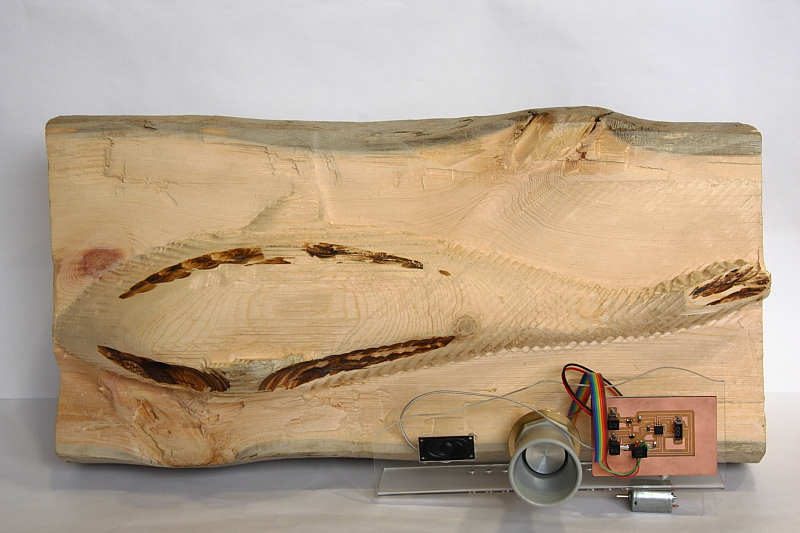

Aim of this project is to make different musical tones depending
on the distance between small Orca and people.
This project will be part of bigger project involving different types
of inputs and outputs for interactive square.
The reason for this project is, that I want to stimulate people to
be more active in open areas.
Prior art before this project are musical speaker boards but I
wanted to make something more interactive.
This project involved several tasks:
* 3 D scanning
* 3 D milling
* Electronic design
* Milling out circuit board
* Making circuit board
* Programming the board
* Laser cutting acrylic board for speaker, sensor and circuit board.
* Sensors, input output project
* How to make circuits in the Fab Lab Using AVR Studio
* Build and Run
* Create .hex file
* Attention -> Remember to unplug the speaker before you program the micro controler.
* Load program to circuit board.
* avrdude -p t45 -c bsd -U flash:w:file.hex